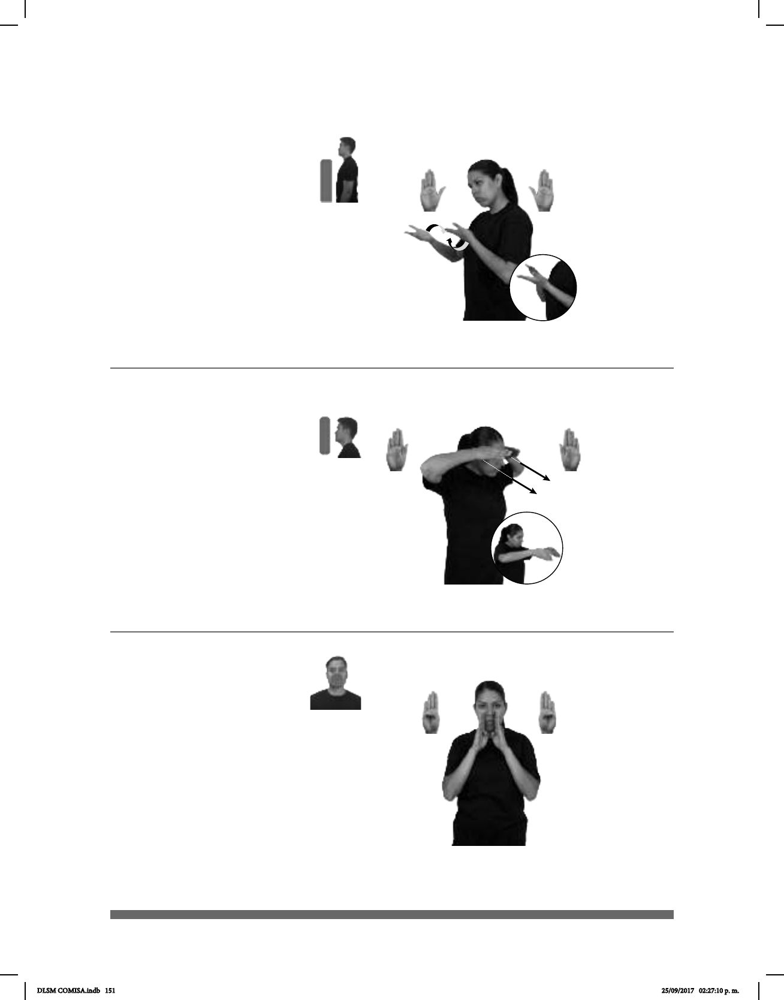

151
(B-P 121)
1
2
(B-P 122)
VALOR IMPORTANTE MUCHO COMPARTIR
Compartir es un valor muy importante.
CARRERA MEDICINA CONCENTRACIÓN A-FUERZA
La medicina es una carrera que exige concentración.
Seña: SB
MD y MB B-P.2
MD y MB palmas
hacia arriba.
A la altura del pecho.
MD sobre de MB.
La MD y la MB se
mueven formando círculos repetida
y alternadamente.
v. tr. Dividir una
persona algo suyo con otra, o usar
entre varias algo de lo que ninguna
de ellas pretende apropiarse.
Seña: SS
B-P.6
Palmas oblicuas hacia el
centro y hacia abajo.
Las manos inician sobre las
sienes y terminan a la altura del pecho.
Recto hacia eL frente.
el pensamiento en algo. 2. sust. f.
Cualidad o estado de la persona que
física o intelectual que realiza.
Confesar
1
2
(B-P 123)
AYER pos-MI ABUELO+MUJER pro-YO CONFESAR
Mi abuela me hizo una confesión ayer.
Seña: SS
B-P.1
Palmas hacia el
centro.
Sobre las comisuras de
los labios.
1. v. tr. Decir una
persona sus pecados a un sacerdote
católico. 2. sust. f. Declaración que
hace una persona acerca de algo
que sabe o siente y que antes no
había hecho explícita.
DLSM COMISA.indb 151 25/09/2017 02:27:10 p. m.